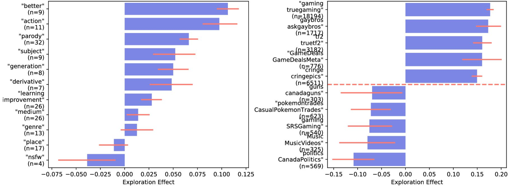
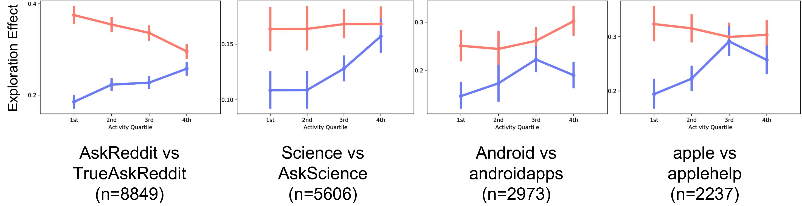

## Reddit Dataset Update
Recently, Gaffney and Matias shared their findings regarding missing
data in the [pushshift.io](https://pushshift.io/) reddit dataset to
[arXiv](https://arxiv.org/pdf/1803.05046.pdf). Their thoughtful and
careful examination highlighted the fact that some data might be
missing from this dataset. In particular, they estimated that 0.043%
of comments and 0.65% of submissions may be missing. They then
highlight several classes of studies which rely upon an assumption of
"full" comment/post history.
Among these were our WWW 2017 and ICWSM 2016 works. Inspired by their
examination and subsequent conversations, we decided to undertake the
following:
1. Rescrape the missing data from the reddit API
2. Re-run key experiments from our [WWW 2017](http://www.cs.cornell.edu/~jhessel/cats/cats.html) paper, which Gaffney and Matias identified as "high risk"
3. Re-run key experiments from our [ICWSM 2016](https://www.cs.cornell.edu/~jhessel/projectPages/redditHRC.html) paper, which Gaffney and Matias identified as "highest risk"
In short, we found:
1. Based on Gaffney and Matias' sequential-ID analysis, we are able to add 1.1% more posts and .125% more comments by re-querying the reddit API. Of all the ID gaps identifiable through the sequential ID theory, roughly 10% of post/comment IDs were available via the reddit API.
2. We were able to replicate the key experiments from our WWW 2017 paper and report no substantial differences between the new results and the published results.
3. We were able to replicate the key experiments from our ICWSM 2016 paper and report no substantial differences between the new results and the published results.
## Part 1: Rescraping Data
We assumed a sequential-ID theory for posts and comments and attempted
to fill in dataset gaps. We have some reason to believe that this
sequential ID assumption will not fill all posts/comments (e.g.,
perhaps the posts never existed, or were fully deleted by reddit
moderators); these are detailed
[here](https://arxiv.org/pdf/1803.05046.pdf#page=8). While our
previous work does not rely upon exactly the same dataset examined by
Gaffney and Matias (our posts derive from an earlier scrape by Jason
Baumgartner, and the dates range from 2007-2014), we did the
following:
* For submissions: we combined 1) Jason Baumgartner's latest 0-10M
scrape 2) The all-who-wander set from Tan and Lee 2015 and 3) The
post set currently (March 2018) available from
[pushshift.io](https://pushshift.io/). Next, we assumed a sequential
ID theory and computed all possible missing posts from ID 87 to ID
1xwb9y (An ID in Mid Feb. 2014, the time at which the all-who-wander
postset ends; this was the data used in our previous studies). Then,
we scraped all missing IDs using the reddit bulk API three times
each, to ensure that intermittent API errors were minimized. The
percent of posts we were able to fill using our API queries was
1.1%, which was in-line with the missing data rate we were aware of
previously. Of the 12.1M gaps we identified, 1.1M were filled by our
re-scraping. Notably, only roughly 10% of the "gaps" were actually
able to be filled; why these gaps cannot be filled is not clear
(e.g., perhaps these posts never existed, were made to
banned/private communities, were deleted by reddit moderators,
etc.).
* For comments: we downloaded the comments dataset currently (March
2018) available from [pushshift.io](https://pushshift.io/) and computed all possible gaps
from ID 2 to ID cyhtlqg (which occurs at the end of 2015; comments
were filled further than posts). Mirroring Gaffney and Matias'
analysis, we assumed that any large gaps of IDs (we assumed 3M) were
due to reddit incrementing its IDs systematically. Then, we scraped
all missing IDs using the bulk API three times each, to ensure that
intermittent API errors were minimized. The percent of comments we
were able to fill using our API queries was .125%, which was in-line
with the missing data rate we were aware of previously. Of the 26.3M
gaps we identified, 2.6M were filled by our re-scraping. Notably,
only roughly 10% of the "gaps" were actually able to be filled; why
these gaps cannot be filled is not clear (e.g., perhaps these
comments never existed, were made to banned/private communities,
were deleted by reddit moderators, etc.).
* We reconstructed comment trees for the 5.7K subreddits with a
careful eye for dangling references. While there still are some
dangling references (specifically, 32.5K due to missing posts, 7K
due to missing comments), a vast majority of subreddits we consider
(5281 / 5693) now have zero dangling references. Among the 412
subreddits with dangling references, the median number of dangling
references per community is 4. Of the 39.5K total dangling
references, 18K are from the now defunct subreddit /r/reddit.com,
which is an archived community that we did not consider in previous
work.
We have (or in the near future will) released updated versions of the
datasets from our previous work with the additional posts/comments we
were able to find filled-in.
## Part 2: Replicating WWW 2017
#### Here is a link to our WWW 2017 [project](http://www.cs.cornell.edu/~jhessel/cats/cats.html) and [paper](https://arxiv.org/pdf/1703.01725.pdf).
Gaffney and Matias point-out that works which rely upon tying comments
to their associated submission are at "high risk" of being impacted by
missing data. A majority of the work in our WWW 2017 paper deals with
tight, time controlled analyses of content: we conduct ranking
experiments on pairs of posts within a short time-window of
each-other, and include experiments on a
evaluated-exactly-once-fully-held-out test set to validate the
generalizability of our content-only models.
We believe the discussion section of Gaffney and Matias identifies our
user-feature baselines as "high risk;" this is the primary part of our
study that relies upon commenting information. So -- to be careful --
we re-ran all of our user feature baseline experiments using the same
10-fold cross validation splits as the original paper. The results are
included below. In short -- the replicated results lie within the 95%
CI of the originally reported results. So -- while the user features
were not the primary focus of the study -- filling in the missing data
does not affect the reported results. Note, however, that our
observations do not indicate that *all* studies that tie comments and
posts are robust to missing data.
### Part 2.1: The Replicated WWW 2017 Results
"Type" user features (table 4), averaged over 10-fold cross validation; mean 95% CI is +/- .5
| | aww | pics | cats | MA | FP | RL |
| --- | --- | --- | --- | --- | --- | --- |
| Published Result | 50.6 | 51.2 | 50.7 | 52.8 | 51.8 | 56.1 |
| Replicated Result | 50.7 | 50.8 | 50.9 | 52.9 | 51.4 | 56.3 |
"Activity" user features (table 4), averaged over 10-fold cross validation; mean 95% CI is +/- .5
| | aww | pics | cats | MA | FP | RL |
| --- | --- | --- | --- | --- | --- | --- |
| Published Result | 51.1 | 53.6 | 52.8 | 55.0 | 53.9 | 60.6 |
| Replicated Result | 51.0 | 53.8 | 52.7 | 55.1 | 53.7 | 60.5 |
"Quality" user features (table 4), averaged over 10-fold cross validation; mean 95% CI is +/- .5
| | aww | pics | cats | MA | FP | RL |
| --- | --- | --- | --- | --- | --- | --- |
| Published Result | 54.7 | 55.5 | 52.9 | 60.7 | 55.5 | 67.3 |
| Replicated Result | 54.6 | 55.5 | 53.0 | 60.8 | 55.3 | 67.4 |
"All" user features (table 5), averaged over 10-fold cross validation; mean 95% CI is +/- .5
| | aww | pics | cats | MA | FP | RL |
| --- | --- | --- | --- | --- | --- | --- |
| Published Result | 56.3 | 55.3 | 54.6 | 60.9 | 56.0 | 68.4 |
| Replicated Result | 56.3 | 55.1 | 54.8 | 61.1 | 55.8 | 68.5 |
## Part 3: Replicating ICWSM 2016
#### Here is a link to our ICWSM 2016 [project](https://www.cs.cornell.edu/~jhessel/projectPages/redditHRC.html) and [paper](https://www.cs.cornell.edu/home/llee/papers/reddit-twins.pdf).
Gaffney and Matias identify the "highest risk" results most implicated
by missing data as those related to tracing user trajectories by
computing a list of all posts/comments made by a given user. Indeed,
our ICWSM 2016 paper contains some results that assume access to a
user's full activity history. Missing posts/comments undoubtedly
violate this assumption.
We believe the results in our work most implicated by missing data are
our controlled user-pairing experiments, whose results are summarized
by Figures 6 and 7 in the original paper. We re-did our pairing
experiments and re-created figures 6 and 7 with the new dataset. The
results, included below, are quite similar. For example, for figure
6a; the reported results are within the 95% confidence intervals of
the replicated results. Similarly, the shape of the
activity-vs-exploration-effect plots in Figure 7 are mirrored by the
replicated results. In short -- it doesn't seem that filling in the
gaps in the data affect these results. Note, however, that our
observations do not indicate that *all* user trajectory studies are
robust to missing data.
### Part 3.1: The Replicated ICWSM 2016 Results
Replication of figure 6 from our ICWSM 2016 work:

Replication of figure 7 from our ICWSM 2016 work:

## Part 4: Thanks!
We are greatly appreciative of Gaffney and Matias' work on the missing
data matter, and will certainly better qualify potential shortcomings
of this reddit set in future work. We would also like to thank Jason
Baumgartner of [pushshift.io](https://pushshift.io/); his scraping work has enabled an
increasing number of excellent studies.